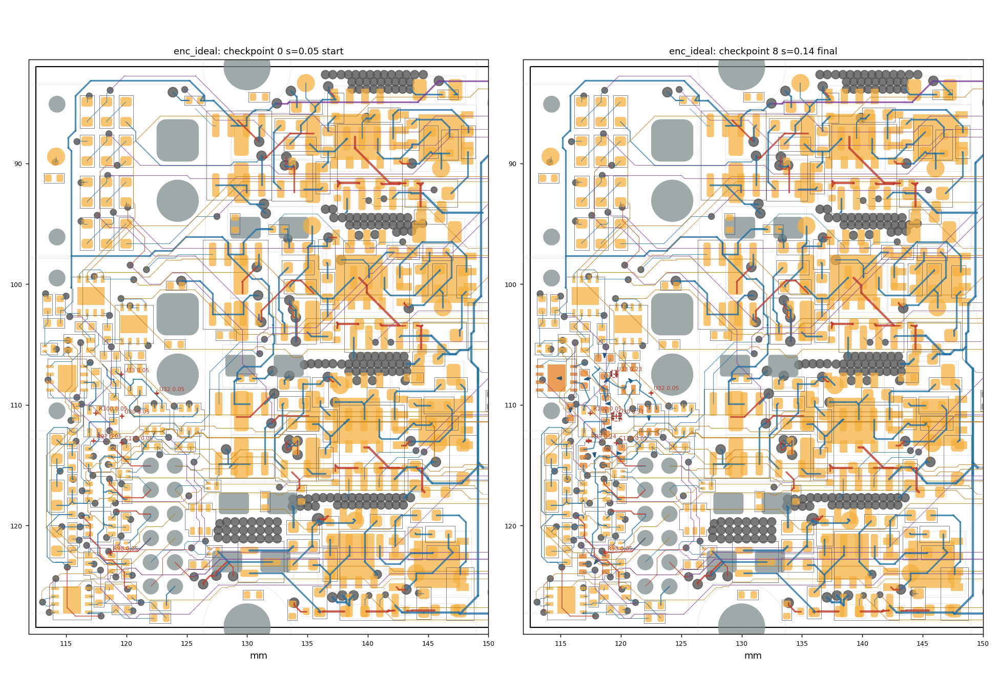
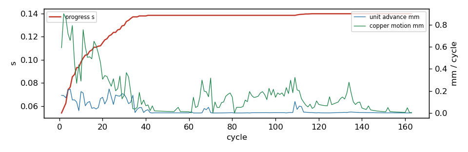

settle run: enc_ideal
163 cycles in 218.2 s, progress s = 0.1398; 0/7 ghosts born; 12 parts moved; 10/129 reroutes verified in 3 rounds. Gate: 9/9 checkpoints pass (baseline 2 violations); length caps hit: 0; check_sync: True.
Region [112.4, 81.9, 149.5, 128.5]; rules clearance 0.1 mm, hole 0.254, edge 0.3, guard 0.015.
185 movable parts, 1706 dynamic segments, 2029 nodes, 7 ghosts.
Orange pads = movable parts (dark orange = moved); grey = fixed; red = ghosts at their current scale; blue arrows = part displacement.
Copper by layer: F red, B blue, In1 green, In2 purple, In3 brown, In4 teal; static copper grey.


Gate per checkpoint
| step | s | tag | unconnected | new_violations | static_missing | fixed_moved | ok | new_desc |
|---|
| 0 | 0.05 | start | 103 | 0 | 0 | [] | True | [] |
| 1 | 0.101 | | 103 | 0 | 0 | [] | True | [] |
| 2 | 0.138 | reroute | 103 | 0 | 0 | [] | True | [] |
| 3 | 0.138 | reroute | 103 | 0 | 0 | [] | True | [] |
| 4 | 0.138 | reroute | 103 | 0 | 0 | [] | True | [] |
| 5 | 0.138 | reroute | 103 | 0 | 0 | [] | True | [] |
| 6 | 0.138 | reroute | 103 | 0 | 0 | [] | True | [] |
| 7 | 0.14 | reroute | 103 | 0 | 0 | [] | True | [] |
| 8 | 0.14 | final | 103 | 0 | 0 | [] | True | [] |
Ghosts
| ref | site | scale | drift_x | drift_y | born |
|---|
| U30 | (119.62, 110.94) | 0.3079 | 0.001 | -0.002 | no |
| U32 | (122.51, 109.05) | 0.05 | -0.01 | -0.049 | no |
| U33 | (119.57, 107.48) | 0.227 | -0.158 | -0.051 | no |
| R97 | (117.31, 112.96) | 0.2439 | -0.0 | 0.016 | no |
| R98 | (118.67, 122.27) | 0.05 | 0.0 | 0.0 | no |
| R100 | (117.47, 110.69) | 0.05 | 0.0 | 0.0 | no |
| C110 | (119.62, 113.14) | 0.05 | 0.0 | 0.0 | no |
Parts moved
| ref | dx | dy | mm | group |
|---|
| R93 | -0.484 | 0.409 | 0.634 | |
| R82 | -0.516 | 0.098 | 0.525 | |
| U18 | -0.402 | -0.007 | 0.402 | |
| R89 | -0.225 | 0.009 | 0.225 | |
| R92 | -0.007 | 0.178 | 0.178 | |
| R88 | -0.176 | 0.004 | 0.176 | |
| FL3 | -0.084 | -0.091 | 0.124 | |
| U25 | 0.004 | 0.08 | 0.08 | |
| C64 | 0.078 | 0.003 | 0.078 | |
| U27 | -0.036 | 0.047 | 0.059 | |
| U22 | 0.008 | 0.058 | 0.059 | |
| C60 | -0.004 | 0.05 | 0.05 | |
Net length growth (copper inside the region)
| net | region_mm | grown_mm | growth_pct | allow_mm | cap_mm | at_cap |
|---|
| /ENC_A_P_SW | 1.77 | 0.502 | 28.4 | 0.5 | 2.0 | |
| /ENC_C_N_SW | 7.89 | 0.826 | 10.5 | 0.789 | 2.0 | |
| /ENC_B_N | 6.6 | 0.378 | 5.7 | 0.66 | 2.0 | |
| GND | 121.37 | 3.727 | 3.1 | None | None | |
| /ENC_A_SW | 44.24 | 0.674 | 1.5 | 8.847 | 22.118 | |
| /ENC_A_DATA | 51.51 | 0.643 | 1.2 | 10.303 | 25.756 | |
| /ENC_A_TRX_B | 3.44 | 0.041 | 1.2 | 0.5 | 2.0 | |
| /ENC_B_N_SW | 11.77 | 0.048 | 0.4 | 1.177 | 2.0 | |
| +3V3 | 181.75 | 0.274 | 0.1 | 54.525 | 181.752 | |
| /EXT_ANALOG_SW | 42.09 | 0.056 | 0.1 | 8.417 | 21.043 | |
| /I2C_SDA | 40.28 | 0.038 | 0.1 | 8.056 | 20.139 | |
| Vdrive | 167.34 | 0.067 | 0.0 | 50.202 | 167.339 | |
| /ENC_B_P_SW | 9.27 | 0.002 | 0.0 | 0.927 | 2.0 | |
| /EXT_ANALOG2 | 70.17 | -0.08 | -0.1 | 14.033 | 35.083 | |
| /H1_SW | 37.5 | -0.044 | -0.1 | 7.5 | 18.75 | |
| /HALL1 | 50.15 | -0.058 | -0.1 | 10.029 | 25.073 | |
| /ENC_C_N | 18.39 | -0.057 | -0.3 | 1.839 | 2.758 | |
| /ENC_A_P | 6.02 | -0.046 | -0.8 | 0.602 | 2.0 | |
| /ENC_C_P_SW | 8.38 | -0.149 | -1.8 | 0.838 | 2.0 | |
| /ENC_A_N_SW | 8.72 | -0.191 | -2.2 | 0.872 | 2.0 | |
| /ENC_C_TRX_B | 2.37 | -0.08 | -3.4 | 0.5 | 2.0 | |
| /ENC_A_TRX_A | 2.64 | -0.431 | -16.3 | 0.5 | 2.0 | |
Stalled units and their blockers
| unit | hard_walled | blocker | net | ref | margin | floor | pos |
|---|
| GHOST:U32 | | dyn_seg | /ENC_C_N_SW | | 0.0105 | 0.015 | [122.489, 109.395] |
| GHOST:U32 | | dyn_seg | /ENC_C_N_SW | | 0.0073 | 0.015 | [122.489, 109.395] |
| GHOST:U32 | | dyn_seg | /ENC_C_N_SW | | 0.0042 | 0.015 | [122.489, 109.395] |
| GHOST:U32 | | dyn_seg | /ENC_C_N_SW | | 0.0019 | 0.015 | [122.489, 109.395] |
| GHOST:U33 | | courtyard | | FL3 | -0.05 | 0.003 | |
| GHOST:R98 | | dyn_seg | /ENC_B_N | | -0.179 | 0.015 | [118.379, 122.23] |
| GHOST:R98 | | dyn_seg | /ENC_B_N | | -0.179 | 0.015 | [118.379, 122.23] |
| GHOST:R98 | | dyn_seg | /ENC_B_N | | -0.1781 | 0.015 | [118.379, 122.23] |
| GHOST:R98 | | dyn_seg | /ENC_B_N | | -0.1751 | 0.015 | [118.379, 122.23] |
| GHOST:R100 | | pad | /ENC_A_TRX_A | FL2.4 | -0.0552 | 0.015 | [117.725, 110.435] |
| GHOST:R100 | | pad | /ENC_A_TRX_A | FL2.4 | -0.0589 | 0.015 | [117.725, 110.435] |
| GHOST:R100 | | pad | /ENC_A_TRX_A | FL2.4 | -0.0606 | 0.015 | [117.725, 110.435] |
| GHOST:R100 | | pad | /ENC_A_TRX_A | FL2.4 | -0.0606 | 0.015 | [117.725, 110.435] |
| GHOST:C110 | | dyn_seg | GND | | 0.0061 | 0.015 | [119.988, 113.156] |
| GHOST:C110 | | dyn_seg | GND | | 0.0012 | 0.015 | [119.988, 113.156] |
| GHOST:C110 | | dyn_seg | GND | | -0.002 | 0.015 | [119.988, 113.156] |
| GHOST:C110 | | dyn_seg | GND | | -0.003 | 0.015 | [119.988, 113.156] |
| C64 | | dyn_via | GND | | -0.0057 | 0.0 | [119.872, 113.034] |
| FL2 | | ghost_pad | +3V3 | GHOST:R97.1 | 0.0114 | 0.015 | [117.18, 112.981] |
| FL2 | | ghost_pad | +3V3 | GHOST:R97.1 | 0.0103 | 0.015 | [117.18, 112.981] |
| FL2 | | ghost_pad | +3V3 | GHOST:R97.1 | 0.0103 | 0.015 | [117.18, 112.981] |
| FL2 | | ghost_pad | +3V3 | GHOST:R97.1 | 0.0114 | 0.015 | [117.18, 112.981] |
| U27 | | dyn_seg | Vdrive | | -0.0053 | 0.015 | [118.222, 122.945] |
| U27 | | dyn_seg | Vdrive | | -0.0274 | 0.015 | [118.222, 122.945] |
| U27 | | dyn_seg | Vdrive | | -0.0349 | 0.015 | [118.222, 122.945] |
| U27 | | dyn_seg | Vdrive | | -0.0349 | 0.015 | [118.222, 122.945] |
| U22 | | dyn_via | GND | | 0.0104 | 0.015 | [117.254, 114.283] |
| U22 | | dyn_via | GND | | -0.0058 | 0.015 | [117.254, 114.283] |
| U22 | | dyn_via | GND | | -0.0058 | 0.015 | [117.254, 114.283] |
| U22 | | dyn_via | GND | | -0.0018 | 0.015 | [117.254, 114.283] |
| GHOST:U30 | | pad | /ENC_A_N_SW | R88.1 | 0.0141 | 0.015 | [118.779, 111.399] |
| GHOST:U30 | | pad | /ENC_A_N_SW | R88.1 | 0.0019 | 0.015 | [118.779, 111.399] |
| GHOST:U30 | | pad | /ENC_A_N_SW | R88.1 | -0.0059 | 0.015 | [118.779, 111.399] |
| GHOST:U30 | | pad | /ENC_A_N_SW | R88.1 | -0.0068 | 0.015 | [118.779, 111.399] |
| U25 | | dyn_seg | /ENC_C_P_SW | | -0.0348 | 0.015 | [121.673, 111.0] |
| U25 | | dyn_seg | /ENC_C_P_SW | | -0.0348 | 0.015 | [121.673, 111.0] |
| U25 | | dyn_seg | /ENC_C_P_SW | | -0.027 | 0.015 | [121.673, 111.0] |
| U25 | | dyn_seg | /ENC_C_P_SW | | -0.0042 | 0.015 | [121.673, 111.0] |
| GHOST:R97 | | dyn_seg | /ENC_A_P_SW | | 0.0148 | 0.015 | [117.804, 113.28] |
| GHOST:R97 | | dyn_seg | /ENC_A_P_SW | | 0.0143 | 0.015 | [117.804, 113.28] |
| GHOST:R97 | | dyn_seg | /ENC_A_P_SW | | 0.0143 | 0.015 | [117.804, 113.28] |
| GHOST:R97 | | courtyard | | U22 | -0.05 | 0.003 | |
| FL3 | | dyn_seg | /ENC_C_N_SW | | -0.0321 | 0.015 | [120.892, 108.031] |
| FL3 | | dyn_seg | /ENC_C_N_SW | | -0.0321 | 0.015 | [120.892, 108.031] |
| FL3 | | courtyard | | GHOST:U33 | -0.05 | 0.003 | |
| R88 | | dyn_via | /ENC_A_SW | | -0.0261 | 0.015 | [118.451, 113.119] |
| R88 | | dyn_via | /ENC_A_SW | | -0.0272 | 0.015 | [118.451, 113.119] |
| R88 | | dyn_via | /ENC_A_SW | | -0.0266 | 0.015 | [118.451, 113.119] |
| R88 | | dyn_via | /ENC_A_SW | | 0.0001 | 0.015 | [118.451, 113.119] |
| grp:R89 | | dyn_seg | /ENC_C_N_SW | | -0.0085 | 0.015 | [119.094, 108.1] |
| grp:R89 | | dyn_seg | /ENC_C_N_SW | | -0.0085 | 0.015 | [119.094, 108.1] |
| grp:R89 | | ghost_pad | /TERM_D_R | GHOST:U33.1 | 0.0136 | 0.015 | [119.199, 107.578] |
| grp:R89 | | ghost_pad | /TERM_D_R | GHOST:U33.1 | 0.0069 | 0.015 | [119.199, 107.578] |
| R82 | | pad | +3V3 | U18.8 | 0.0048 | 0.015 | [116.095, 108.773] |
| R82 | | pad | +3V3 | U18.8 | 0.0048 | 0.015 | [116.095, 108.773] |
| R82 | | pad | +3V3 | U18.8 | 0.0044 | 0.015 | [116.095, 108.773] |
| R82 | | pad | +3V3 | U18.8 | 0.0044 | 0.015 | [116.095, 108.773] |
| U18 | | dyn_via | /ENC_A_DATA | | 0.008 | 0.015 | [115.893, 109.388] |
Absorbed pressure (where demand died)
| mover | blocker | what | hits |
|---|
| R93 | dyn_seg | /ENC_C_N_SW | 2 |
Config
{
"name": "enc_ideal",
"board": "/home/sequoia/pcb/rp2350-motor-controller-lean-jiggle/hardware/rp2350_driver.kicad_pcb",
"region": [
112.4,
81.9,
149.5,
128.5
],
"rules": {
"guard": 0.015
},
"locked": {
"sides": [],
"refs": [
"J1",
"J2",
"J12",
"J9",
"J10",
"H3",
"H4",
"D9",
"D13",
"D17",
"D21",
"C80",
"C39",
"C42",
"D5"
],
"nets": [
"^/USB_D",
"^/CAN0_"
],
"rects": []
},
"mobility": {
"default": 1.0
},
"groups": {},
"drive": {
"inflate": [
{
"ref": "U30",
"at": "auto"
},
{
"ref": "U32",
"at": "auto"
},
{
"ref": "U33",
"at": "auto"
},
{
"ref": "R97",
"at": "auto"
},
{
"ref": "R98",
"at": "auto"
},
{
"ref": "R100",
"at": "auto"
},
{
"ref": "C110",
"at": {
"near": "U30",
"offset": [
0.0,
2.2
]
}
}
]
},
"step": 0.05,
"snapshots": 10,
"cycles": 500,
"data": "/home/sequoia/pcb/rp2350-motor-controller-lean-jiggle/hardware/tools/settle/configs/data/enc_ideal"
}
Elastic table
{
"default": {
"k": 0.5,
"allow": 0.2,
"cap": 0.5,
"allow_mm": 0.5,
"cap_mm": 2.0
},
"classes": {
"VMOT": {
"k": 0.2,
"allow": 0.3,
"cap": 1.0,
"allow_mm": 1.0,
"cap_mm": 6.0
},
"power": {
"k": 0.2,
"allow": 0.3,
"cap": 1.0,
"allow_mm": 1.0,
"cap_mm": 6.0
},
"usb_5A": {
"k": 0.2,
"allow": 0.3,
"cap": 1.0,
"allow_mm": 1.0,
"cap_mm": 6.0
},
"low_power": {
"k": 0.2,
"allow": 0.3,
"cap": 1.0,
"allow_mm": 1.0,
"cap_mm": 6.0
}
},
"nets": {
"^GND": {
"k": 0.0,
"allow": 1000000000.0,
"cap": 1000000000.0
},
"^(VMOT|Vdrive|VBUS|\\+3V3|\\+1V1|\\+5V_ISO|/V_ENC|/V_SW)$": {
"k": 0.2,
"allow": 0.3,
"cap": 1.0,
"allow_mm": 1.0,
"cap_mm": 6.0
},
"^Net-\\(U(1|6|7|12)-(HO|LO|VB)\\)$": {
"k": 4.0,
"allow": 0.0,
"cap": 0.05,
"allow_mm": 0.0,
"cap_mm": 0.3
},
"^/2[ABCD]G[HL]$": {
"k": 4.0,
"allow": 0.0,
"cap": 0.05,
"allow_mm": 0.0,
"cap_mm": 0.3
},
"^Net-\\(Q[1-4]-[BE]\\)$": {
"k": 4.0,
"allow": 0.0,
"cap": 0.05,
"allow_mm": 0.0,
"cap_mm": 0.3
},
"^Net-\\((R(24|59|62|67|70)|D\\d+)-": {
"k": 2.0,
"allow": 0.05,
"cap": 0.15,
"allow_mm": 0.2,
"cap_mm": 0.8
},
"^/USB_D": {
"k": 4.0,
"allow": 0.0,
"cap": 0.02,
"allow_mm": 0.0,
"cap_mm": 0.1
},
"^/CAN0_": {
"k": 4.0,
"allow": 0.0,
"cap": 0.02,
"allow_mm": 0.0,
"cap_mm": 0.1
},
"^/ENC_[A-D]_(P|N)(_SW)?$": {
"k": 1.0,
"allow": 0.1,
"cap": 0.15,
"allow_mm": 0.5,
"cap_mm": 2.0
},
"^/ENC_[A-D]_TRX_": {
"k": 1.0,
"allow": 0.1,
"cap": 0.2,
"allow_mm": 0.5,
"cap_mm": 2.0
},
"^[ABCD]_PWM_": {
"k": 1.0,
"allow": 0.1,
"cap": 0.25,
"allow_mm": 0.5,
"cap_mm": 3.0
},
"SENSE": {
"k": 1.0,
"allow": 0.1,
"cap": 0.2,
"allow_mm": 0.5,
"cap_mm": 2.0
}
}
}
Log tail
ed (1 candidates)
ghost R98 idle 20 cycles at scale 0.050: local reroute of 3 clamping chains
reroute round 1.18: 0/3 chains rerouted (3 candidates)
ghost C110 idle 20 cycles at scale 0.050: local reroute of 1 clamping chains
cycle 65: s=0.138 ghosts=0/7 blocked=10 adv=0.000mm copper=0.145mm [80s]
cycle 70: s=0.138 ghosts=0/7 blocked=9 adv=0.002mm copper=0.318mm [85s]
ghost U32 idle 20 cycles at scale 0.050: local reroute of 2 clamping chains
reroute round 1.20: 0/2 chains rerouted (2 candidates)
ghost U33 idle 20 cycles at scale 0.217: local reroute of 3 clamping chains
reroute round 1.21: 1/1 chains rerouted (1 candidates)
checkpoint 4: s=0.138 reroute
ghost R97 idle 20 cycles at scale 0.244: local reroute of 1 clamping chains
reroute round 1.22: 0/1 chains rerouted (1 candidates)
ghost R98 idle 20 cycles at scale 0.050: local reroute of 3 clamping chains
reroute round 1.23: 0/3 chains rerouted (3 candidates)
ghost C110 idle 20 cycles at scale 0.050: local reroute of 1 clamping chains
cycle 75: s=0.138 ghosts=0/7 blocked=9 adv=0.000mm copper=0.093mm [94s]
cycle 80: s=0.138 ghosts=0/7 blocked=9 adv=0.002mm copper=0.145mm [99s]
ghost U32 idle 20 cycles at scale 0.050: local reroute of 2 clamping chains
reroute round 1.25: 0/2 chains rerouted (2 candidates)
ghost U33 idle 20 cycles at scale 0.217: local reroute of 3 clamping chains
reroute round 1.26: 1/1 chains rerouted (1 candidates)
checkpoint 5: s=0.138 reroute
ghost R97 idle 20 cycles at scale 0.244: local reroute of 1 clamping chains
reroute round 1.27: 0/1 chains rerouted (1 candidates)
ghost R98 idle 20 cycles at scale 0.050: local reroute of 3 clamping chains
reroute round 1.28: 0/3 chains rerouted (3 candidates)
ghost C110 idle 20 cycles at scale 0.050: local reroute of 1 clamping chains
stall at cycle 81 (s=0.138): reroute round 1
reroute round 1: 3/16 chains rerouted (25 candidates)
checkpoint 6: s=0.138 reroute
cycle 85: s=0.138 ghosts=0/7 blocked=9 adv=0.000mm copper=0.059mm [114s]
cycle 90: s=0.138 ghosts=0/7 blocked=9 adv=0.002mm copper=0.141mm [120s]
ghost U32 idle 20 cycles at scale 0.050: local reroute of 2 clamping chains
reroute round 2.30: 0/2 chains rerouted (2 candidates)
ghost U33 idle 20 cycles at scale 0.217: local reroute of 3 clamping chains
ghost R97 idle 20 cycles at scale 0.244: local reroute of 1 clamping chains
reroute round 2.32: 0/1 chains rerouted (1 candidates)
ghost R98 idle 20 cycles at scale 0.050: local reroute of 3 clamping chains
reroute round 2.33: 0/3 chains rerouted (3 candidates)
ghost C110 idle 20 cycles at scale 0.050: local reroute of 1 clamping chains
cycle 95: s=0.138 ghosts=0/7 blocked=9 adv=0.003mm copper=0.167mm [128s]
cycle 100: s=0.138 ghosts=0/7 blocked=9 adv=0.003mm copper=0.142mm [134s]
ghost U32 idle 20 cycles at scale 0.050: local reroute of 2 clamping chains
reroute round 2.35: 0/2 chains rerouted (2 candidates)
ghost U33 idle 20 cycles at scale 0.217: local reroute of 3 clamping chains
ghost R97 idle 20 cycles at scale 0.244: local reroute of 1 clamping chains
reroute round 2.37: 0/1 chains rerouted (1 candidates)
ghost R98 idle 20 cycles at scale 0.050: local reroute of 3 clamping chains
reroute round 2.38: 0/3 chains rerouted (3 candidates)
ghost C110 idle 20 cycles at scale 0.050: local reroute of 1 clamping chains
cycle 105: s=0.138 ghosts=0/7 blocked=10 adv=0.001mm copper=0.230mm [142s]
stall at cycle 106 (s=0.138): reroute round 2
reroute round 2: 2/16 chains rerouted (19 candidates)
checkpoint 7: s=0.138 reroute
cycle 110: s=0.139 ghosts=0/7 blocked=8 adv=0.033mm copper=0.210mm [153s]
ghost U32 idle 20 cycles at scale 0.050: local reroute of 2 clamping chains
reroute round 3.40: 0/2 chains rerouted (2 candidates)
ghost R97 idle 20 cycles at scale 0.244: local reroute of 1 clamping chains
reroute round 3.41: 0/1 chains rerouted (1 candidates)
ghost R98 idle 20 cycles at scale 0.050: local reroute of 3 clamping chains
reroute round 3.42: 0/3 chains rerouted (3 candidates)
ghost C110 idle 20 cycles at scale 0.050: local reroute of 1 clamping chains
cycle 115: s=0.140 ghosts=0/7 blocked=7 adv=0.004mm copper=0.055mm [161s]
cycle 120: s=0.140 ghosts=0/7 blocked=7 adv=0.002mm copper=0.078mm [166s]
ghost U32 idle 20 cycles at scale 0.050: local reroute of 2 clamping chains
reroute round 3.44: 0/2 chains rerouted (2 candidates)
ghost R97 idle 20 cycles at scale 0.244: local reroute of 1 clamping chains
reroute round 3.45: 0/1 chains rerouted (1 candidates)
ghost R98 idle 20 cycles at scale 0.050: local reroute of 3 clamping chains
reroute round 3.46: 0/3 chains rerouted (3 candidates)
ghost C110 idle 20 cycles at scale 0.050: local reroute of 1 clamping chains
cycle 125: s=0.140 ghosts=0/7 blocked=8 adv=0.001mm copper=0.147mm [173s]
cycle 130: s=0.140 ghosts=0/7 blocked=7 adv=0.004mm copper=0.129mm [177s]
ghost U32 idle 20 cycles at scale 0.050: local reroute of 2 clamping chains
reroute round 3.48: 0/2 chains rerouted (2 candidates)
cycle 135: s=0.140 ghosts=0/7 blocked=7 adv=0.009mm copper=0.182mm [183s]
stall at cycle 138 (s=0.140): reroute round 3
reroute round 3: 2/14 chains rerouted (14 candidates)
checkpoint 8: s=0.140 reroute
cycle 140: s=0.140 ghosts=0/7 blocked=7 adv=0.004mm copper=0.045mm [192s]
cycle 145: s=0.140 ghosts=0/7 blocked=7 adv=0.002mm copper=0.024mm [197s]
cycle 150: s=0.140 ghosts=0/7 blocked=7 adv=0.001mm copper=0.012mm [201s]
cycle 155: s=0.140 ghosts=0/7 blocked=7 adv=0.001mm copper=0.010mm [206s]
cycle 160: s=0.140 ghosts=0/7 blocked=7 adv=0.001mm copper=0.005mm [210s]
stall at cycle 163 (s=0.140): reroute round 4
reroute round 4: 0/11 chains rerouted (11 candidates)
STALL after 163 cycles (25 without advance, 3 reroute rounds): s=0.140, 7 ghosts unborn
checkpoint 9: s=0.140 final
captured 89 frames, 12 line-search traces -> frames.json
wrote traj.json (9 checkpoints) + settle_report.json in 218s: 12 parts moved, 2 nets over allowance, 0 length-cap hits, 0 board-edge hits — run emit.py